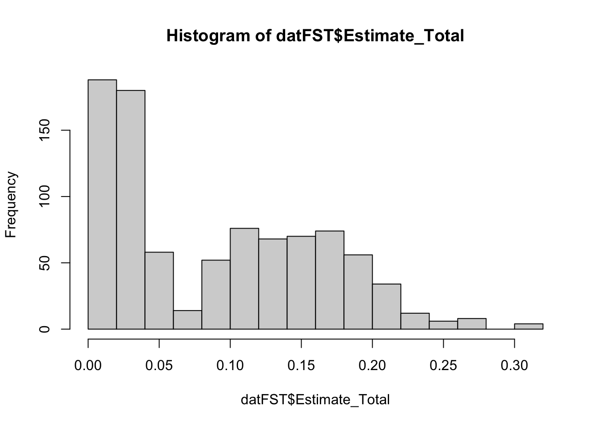
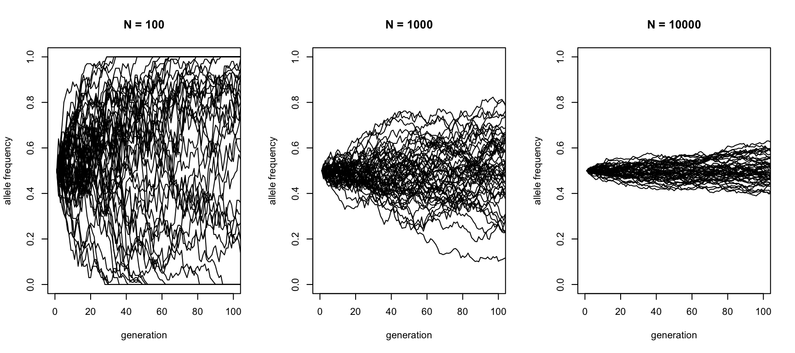

\(F_\text{ST}\) is a measure for how differentiated two populations are, taking into account internal genetic variation. It sometimes called the “Fixation Index”. It is in spirit very similar to \(F_2\), in that it becomes 0 if two populations are not differentiated at all (meaning they are effectively the same), and the more differentiated, the more positive is the measure. However, \(F_\text{ST}\) is scaled very differently from \(F_2\).
While there are various mathematical definitions for both the theoretical definition and estimation for \(F_\text{ST}\), which differ in subtle ways, we here follow the excellent paper by (Bhatia et al. 2013), which proposes the following estimator, termed Hudson-estimator:
\[F_\text{ST}=1-\frac{H_w}{H_b}\]
Here, \(H_w\) is the average heterozygosity within each population, and \(H_b\) is the average heterozygosity between two populations. We can easily read off the two boundaries of the definition: At the lower end, we have \(F_\text{ST}=0\) if and only if \(H_w=H_b\), so there is no difference between heterozygosity measured within or between groups, which is equivalent to saying that the two populations are the same. On the upper end we have \(F_\text{ST}=1\) if and only if \(H_w=0\), so all observed variants are fully fixed in both populations (but not necessarily different between the populations).
Note
(Bhatia et al. 2013) also give a more formal evolutionary definition of \(F_\text{ST}\), developed in turn by (Weir and Hill 2002), in terms of covariance between derived and ancestral populations. Specifically, for a given SNP, the definition involves the conditional probability of allele frequency \(p_i\) in population \(i\), given an ancestral allele frequency \(p_\text{anc}\), which is defined as a random process with the expectation
\[E(p_i|p_\text{anc}) = p_\text{anc}\]
and variance \[Var(p_i|p_\text{anc}) = F_\text{ST}^i p_\text{anc}(1-p_\text{anc}).\]
This form of the conditional variance can be understood by analysing the equation for the two boundary cases: For \(F_\text{ST}^i=0\), there is no variance, so the conditional probability of the derived frequency will be completely determined by the ancestral frequency with no random change. In contrast \(F_\text{ST}^i=1\) means that the variance in the derived allele frequency is that of a binomial distribution with variance \(p_\text{anc}(1-p_\text{anc}\), indicating random but complete fixation of the frequency to 0 or 1.
\(F_\text{ST}\) between two populations A and B is then defined as \[F_\text{ST}(A,B) = \frac{F_\text{ST}^A+F_\text{ST}^B}{2}\],
Here, \(a\) and \(b\) denote population allele frequencies, which are in principle unobserved, but can be approximated by sample allele frequencies. This approximation is biased, and (Patterson et al. 2012) gives additional formulae for an (asympotically) unbiased estimator.
From this definition, you can see that \(F_\text{ST}(A,B)\) is closely related to F2-statistics, introduced in (Patterson et al. 2012):
\[F_2(A,B)=(a-b)^2\].
In some sense, \(F_\text{ST}(A,B)\) can be considered a normalised version of \(F_2(A,B)\). While both statistics range mathematically from 0 to 1, the upper bound 1 has very different meanings in both. A theoretical value of \(F_2=1\) would mean that both populations are fixed at different alleles in all studied SNPs, which is practically not possible (even completely random fixations would suggest that 1/4 of them would agree given that there are only four nucleotides, let alone the fact that such deeply diverged populations/species would not be alignable anymore). One can say that the time-scale on which \(F_2\) approaches 1, for non-ascertained SNPs, so the entire genome, is the time scale of nucleotide substitutions (i.e. mutations plus fixation) along species branches, which in neutral evolution is given by the inverse mutation rate \(1/\mu\). This would mean something on the order of \(10^8\) generations, which is arguably as deep as the tree of live itself. In contrast, \(F_\text{ST}\) approaches 1 on the time-scale of fixation of standing variation, which is \(2N\) generations, which for humans is on the order of 10000 generations, so around the depth of modern-human diversity from its origins in Africa several hundred thousand years ago. Arguably, this time scale is much more useful for data analyses and thus easier to interpret.
Of course, in practice, one uses some ascertained SNP set, as also here in our examples below, in which case values are much higher because we consider only variants that are segregating in human populations within a relatively high allele frequency.
If you’ve gone through our chapter on F3 and F4 statistics, you will have already encountered our software xerxes. You can compute both the biased and the approximately unbiased estimators for \(F_\text{ST}(A,B)\), using the FST or FSTvanilla statistics, as defined in the whitepaper.
For what follows, we will use the approximately unbiased form FST.
\(F_\text{ST}(A,B)\) has a convenient and untuitive scale: It ranges from 0 to 1, where \(F_\text{ST}(A,B)=0\) denotes that \(A\) and \(B\) are the same population, with no differentiation whatsoever. On the other hand of the spectrum we have \(F_\text{ST}(A,B)=1\), which would mean that two populations are fully separated.
Another way to see this measure is to consider it as relative shared variance: If you consider genetic variation between\(A\) and \(B\), and within each of \(A\) and \(B\), then \(F_\text{ST}(A,B)\) can be considered to measure the average variance between populations relative to the average variance within populations, again with intuitive boundaries 0 and 1.
5.2 Computing FST using xerxes
For human present-day populations, we can compute pairwise FSt using xerxes.
We here chose a number of populations from (Patterson et al. 2012) with more than 10 samples per population, and prepare the following config file for xerxes:
Patterson, Nick, Priya Moorjani, Yontao Luo, Swapan Mallick, Nadin Rohland, Yiping Zhan, Teri Genschoreck, Teresa Webster, and David Reich. 2012. “Ancient Admixture in Human History.”Genetics 192 (3): 1065–93. https://doi.org/10.1534/genetics.112.145037.
This will then produce all combinations of \(FST(A, B)\) and \(F_2(A, B)\) as indicated in the population lists.
Note
Note that the config-file engine in xerxes always computes all the combinations of populations, even for cases of \(A=B\). It also doesn’t know about symmetry, so will happily compute the redundant statistics \(FST(\text{Adygei}, \text{Adygei})\) and \(FST(\text{Adygei}, \text{Adygei})\). While this could be possibly improved, there is no big harm done, as this runs fairly quickly.
but of course has many more lines (>1800 in this case). We also used the -f flag to output a tab-separated file, here named fstat_world_output.tsv, which is easier to read into R.
5.3 Plotting results in R
All of the following code uses strictly only base-R for maximum compatibility. The code should run on any R installation.
We first load the data
dat <- dat <-subset(read.table("fst_working/fstat_world_output.tsv", sep="\t", header =TRUE),select=-c(c, d, Z_score_Jackknife))datFST <- dat[dat$Statistic =="FST",]datF2 <- dat[dat$Statistic =="F2",]head(datFST)
which shows that the largest FST values of around 0.3 are observed between Karitiana, from South America, and Biaka from Papua Neu Guinea (but note that these values are dependent on the ascertainment of SNPs, which here causes inflation)
Here is a histogram of the values
hist(datFST$Estimate_Total)

So most values are in the range of a few percent and 20 percent, with a mean of
mean(datFST$Estimate_Total)
[1] 0.09015616
We can compare that to F2:
hist(datF2$Estimate_Total)

which is an order of magnitude smaller.
So one of the key things to visualise is the pairwise matrix of FST, which we can quickly compute using the xtabs function from the stats package (part of base R):
fstMat <-xtabs(Estimate_Total ~ a + b, datFST)f2Mat <-xtabs(Estimate_Total ~ a + b, datF2)
and plot a simple heatmap using the powerful heatmap function from the stats package:
fstDist <-as.dist(fstMat)dendro <-hclust(fstDist, method="ward.D2")plot(dendro, hang =-1)
which again shows the strong drift that Native American populations (Karitiana) and Mayans experienced in their ancestral past.
This nicely shows how FST is affected by total drift, which is inversely proportional to population size, and proportional to total divergence time. A long branch can be caused by either low population size (as in the ancestral population of indigenous Americans) or long divergence time (as between populations from Africa and those outside of Africa).